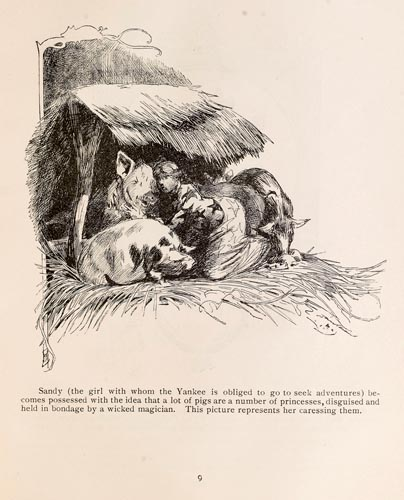

|  |
Sandy (the girl with whom the Yankee is obliged to go to seek adventures) becomes possessed with the idea that a lot of pigs are a number of princesses, disguised and held in bondage by a wicked magician. This picture represents her caressing them. |